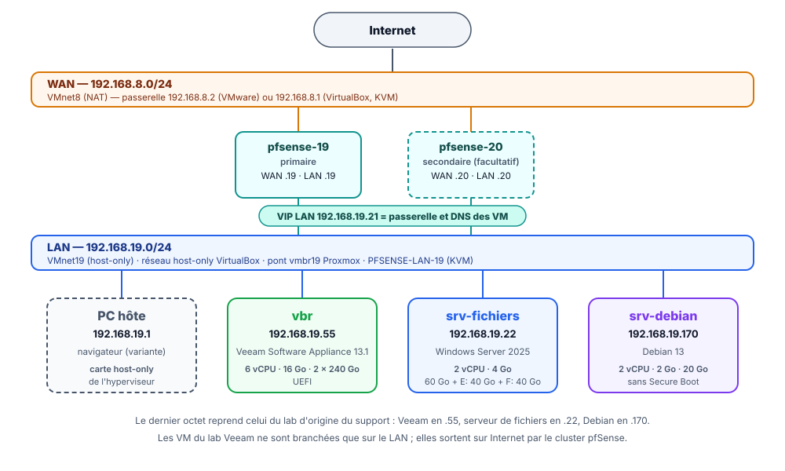

Veeam Backup & Replication 13.1 : cours et travaux pratiques¶
Résumé
Ce parcours en sept parties apprend à protéger les données d'une petite infrastructure avec Veeam Backup & Replication 13.1, l'un des logiciels de sauvegarde les plus répandus en entreprise. Il commence par deux cours (les principes de la sauvegarde, puis l'offre Veeam), continue par quatre travaux pratiques réalisés dans un laboratoire virtuel, et se termine par une partie illustrée sur la sauvegarde dans le cloud Azure.
Au bout du parcours, un serveur de sauvegarde Veeam protège un serveur de fichiers Windows et un serveur Linux. Le serveur Linux aura été entièrement reconstruit à partir de sa sauvegarde, après une panne simulée.
Cette page rassemble ce qu'il faut garder sous la main pendant tout le parcours : le plan, le schéma du lab, les adresses, les comptes et mots de passe, le dimensionnement des machines virtuelles et les instantanés conseillés.
| Propriété | Valeur |
|---|---|
| Public | Débutants en administration système : aucune connaissance de Veeam n'est demandée |
| Durée totale | Environ 15 h (cours, TP et questions de révision) |
| Version décrite | Veeam Backup & Replication 13.1.2.57 (Veeam Software Appliance, octobre 2026) |
| Dernière mise à jour | 2026-11-02 |
Objectifs du parcours¶
À la fin du parcours, il est possible de :
- expliquer la différence entre sauvegarde, synchronisation, réplication et RAID, et appliquer la règle 3-2-1-1-0 ;
- installer et sécuriser une Veeam Software Appliance (MFA, compte Security Officer, dépôt immuable) ;
- créer des dépôts de sauvegarde sur l'appliance et sur un serveur Windows ;
- protéger la configuration du serveur de sauvegarde lui-même ;
- sauvegarder un serveur Windows au niveau des fichiers et restaurer un fichier supprimé ;
- sauvegarder un serveur Linux entier et le restaurer sur un disque vierge (bare metal) ;
- comprendre comment envoyer une copie des sauvegardes hors site, dans un stockage objet.
Plan du parcours¶
| Partie | Type | Durée | Contenu | Machines allumées |
|---|---|---|---|---|
| 1. Comprendre la sauvegarde | Cours | 2 h 30 | Sauvegarde, synchronisation, réplication, RAID, règles 3-2-1 et 3-2-1-1-0, types de sauvegarde, PCA et PRA, RPO et RTO | Aucune |
| 2. Découvrir Veeam Data Platform 13 | Cours | 1 h 30 | Produits Veeam, nouveautés de la version 13, licences, composants d'une infrastructure Veeam | Aucune |
| 3. Préparer le lab et installer l'appliance | TP | 4 h | Réseau, machines virtuelles, installation de l'appliance, interface web, licence, Security Officer, console Windows | Toutes |
| 4. Ajouter des dépôts de sauvegarde | TP | 1 h 30 | Dépôt immuable de l'appliance, serveur Windows géré, dépôt ReFS | pfSense, vbr, srv-fichiers |
| 5. Sauvegarder la configuration et le serveur de fichiers | TP | 2 h | Sauvegarde de configuration chiffrée, agent Veeam pour Windows, restauration d'un fichier | pfSense, vbr, srv-fichiers |
| 6. Sauvegarder et restaurer un serveur Linux | TP | 2 h 30 | Agent Veeam pour Linux, panne totale, restauration bare metal avec le support de récupération | pfSense, vbr, srv-debian (+ srv-fichiers pour le navigateur) |
| 7. Sauvegarder vers Azure Blob Storage | Cours illustré | 1 h | Dépôt objet dans Azure, job vers le cloud, dépannage libfuse |
Aucune |
Les durées sont indicatives : la première installation de l'appliance prend à elle seule environ une heure, dont une bonne partie d'attente.
Suivre l'ordre
Chaque TP s'appuie sur le précédent : la partie 5 utilise le dépôt créé en partie 4, la partie 6 la console et l'appliance installées en partie 3. Les deux cours peuvent se lire avant ou pendant les longues attentes de la partie 3.
Schéma du lab¶

Le rôle de chaque composant Veeam dans ce lab est détaillé dans la partie 2.
Plan d'adressage¶
| Machine | Rôle | Adresse IP | Passerelle et DNS | Système |
|---|---|---|---|---|
pfsense-19 (+ pfsense-20, facultatif) |
Pare-feu, routeur NAT et DNS du LAN | VIP LAN 192.168.19.21 |
— | pfSense CE |
vbr |
Serveur de sauvegarde : Veeam Software Appliance 13.1 | 192.168.19.55/24 |
192.168.19.21 |
Rocky Linux 9 durci (fourni par Veeam) |
srv-fichiers |
Serveur de fichiers à protéger, dépôt n° 2, console Veeam | 192.168.19.22/24 |
192.168.19.21 |
Windows Server 2025 Standard |
srv-debian |
Serveur Linux à protéger | 192.168.19.170/24 |
192.168.19.21 |
Debian 13 |
| PC hôte | Navigateur web (variante) | 192.168.19.1 |
— | Celui du PC |
Les derniers octets sont faciles à retenir : .55 pour Veeam, .22 pour le serveur de fichiers, .170 pour Debian. L'adressage est celui du TP pfSense, sur lequel les machines du lab se branchent directement. Toutes les machines du lab sont branchées sur le même réseau LAN, dont le nom dépend de l'hyperviseur :
Réseau VMnet19 en mode Host-only, sous-réseau 192.168.19.0/24, créé dans l'éditeur de réseaux virtuels pendant le TP pfSense. Le PC hôte y reçoit l'adresse 192.168.19.1.
Réseau privé hôte (host-only) 192.168.19.0/24, créé pendant le TP pfSense. Le PC hôte y a l'adresse 192.168.19.1.
Pont Linux (par exemple vmbr19) sans port physique, créé dans Datacenter > nœud > System > Network. Un pfSense (ou un autre routeur) relie ce pont au réseau qui sort sur Internet. Le PC de l'administrateur n'est pas sur ce réseau : le navigateur du lab est celui de srv-fichiers.
Sans le lab pfSense
Le cluster pfSense n'est pas indispensable : un seul pfSense suffit, ou n'importe quel routeur qui offre la passerelle et le DNS en 192.168.19.21. À défaut, brancher les trois VM sur le réseau NAT de l'hyperviseur et garder les mêmes derniers octets dans le sous-réseau de ce NAT, avec la passerelle propre à l'hyperviseur (par exemple .2 pour le NAT de VMware). Il faut alors remplacer partout 192.168.19.x par les adresses de ce sous-réseau.
Comptes et mots de passe¶
Ce lab est pédagogique : les mots de passe sont écrits ici volontairement pour que chacun puisse suivre à l'identique. En production, chaque mot de passe serait unique, long et rangé dans un gestionnaire de mots de passe.
| Où | Compte | Mot de passe | Créé en |
|---|---|---|---|
Appliance vbr : interface web, Host Management, console Windows |
veeamadmin (nom imposé) |
PoPoPo000@@@Lab + code MFA |
Partie 3 |
Appliance vbr : Host Management |
veeamso (Security Officer) |
PoPoPo111@@@Lab à l'installation, puis PoPoPo555@@@Lab dès la première connexion + code MFA |
Partie 3 |
| Phrase secrète de sauvegarde de configuration (Security Officer) | — | PoPoPo666@@@Lab |
Partie 3 |
srv-fichiers (Windows Server 2025) |
Administrateur |
Popopo222@@@ |
Partie 3 |
srv-debian (Debian 13) |
user (membre du groupe sudo) |
Popopo333@@@ |
Partie 3 |
| Chiffrement de la sauvegarde de configuration | — | Popopo444@@@ |
Partie 5 |
Pourquoi PoPoPo000@@@Lab et pas Popopo000@@@ sur l'appliance ?
L'appliance applique la politique de mots de passe du référentiel de sécurité DISA STIG : au moins 15 caractères, des majuscules, des minuscules, des chiffres et des caractères spéciaux, jamais plus de 4 caractères de la même catégorie à la suite, et un contrôle par dictionnaire. Popopo000@@@ est refusé (« opopo » = 5 minuscules de suite, et 12 caractères seulement). PoPoPo000@@@Lab respecte toutes les règles. La partie 3 montre les messages de refus.
Les codes MFA sont générés par une application d'authentification installée sur un téléphone (Microsoft Authenticator, Google Authenticator, FreeOTP…). Chaque appliance a sa propre clé secrète : les QR codes des captures sont floutés exprès.
Dimensionnement des machines virtuelles¶
| Machine | Confortable (conseillé) | Minimal | Disques |
|---|---|---|---|
vbr |
6 vCPU, 16 Go | 4 vCPU, 8 Go | 2 disques de 240 Go, dynamiques, UEFI |
srv-fichiers |
2 vCPU, 4 Go | 2 vCPU, 4 Go | 60 Go (C:) + 40 Go (E:) + 40 Go (F:, partie 4) |
srv-debian |
2 vCPU, 2 Go | 2 vCPU, 2 Go | 20 Go (+ un disque vierge de 20 Go en partie 6) |
pfsense-19 |
1 vCPU, 2 Go | 1 vCPU, 1 Go | 20 Go |
- Pour l'appliance, Veeam demande au minimum 8 cœurs et 16 Go de RAM (plus 500 Mo par job simultané), et accepte 6 vCPU et 16 Go pour une petite infrastructure de 5 machines protégées au plus : c'est le profil confortable, conseillé pour ce parcours. Le profil minimal (8 Go, 4 vCPU) est en dessous du minimum pris en charge par Veeam : il ne convient pas à la production, mais il suffit pour ce lab : l'appliance démarre, l'interface web reste utilisable et les deux jobs du parcours réussissent (environ 3 minutes chacun).
- Mémoire du PC hôte : 32 Go permettent de tout allumer en profil confortable. Avec 16 à 24 Go, prendre le profil minimal et n'allumer que les machines de la partie en cours (colonne « Machines allumées » du plan), en fermant les applications inutiles du PC.
- Disque du PC hôte : prévoir environ 150 Go libres, de préférence sur un SSD. Les disques sont dynamiques : les 2 × 240 Go de l'appliance n'occupent au départ qu'une trentaine de gigaoctets ; l'espace occupé grandit ensuite avec les sauvegardes.
- La virtualisation matérielle (Intel VT-x ou AMD-V) doit être activée dans le BIOS/UEFI du PC.
Instantanés conseillés¶
Un instantané (snapshot) fige l'état d'une machine virtuelle. En cas d'erreur, on y revient en quelques secondes au lieu de tout recommencer. Prendre les instantanés VM éteintes de préférence, sur toutes les machines du lab en même temps, aux étapes marquées 🛟 :
| Instantané | Moment | Permet de recommencer |
|---|---|---|
01-lab-pret |
Fin de la partie 3 | Les parties 4, 5 et 6 avec un lab propre |
02-depots |
Fin de la partie 4 | La partie 5 |
03-fichiers-sauvegardes |
Fin de la partie 5 | La partie 6 |
04-avant-panne |
Partie 6, juste avant de simuler la panne | La restauration bare metal autant de fois que nécessaire |
Un instantané n'est pas une sauvegarde
L'instantané reste sur le même disque que la machine virtuelle : si le disque du PC hôte tombe en panne, les instantanés disparaissent avec lui. C'est exactement la différence entre une copie de confort et une vraie sauvegarde, expliquée dans la partie 1.
Logiciels à télécharger¶
| Logiciel | Où le trouver | Remarque |
|---|---|---|
| Veeam Software Appliance 13.1 (ISO d'environ 16,7 Go, soit 15,6 Gio) | Téléchargements Veeam | Compte Veeam gratuit obligatoire ; la clé d'essai de 30 jours se demande au même endroit |
| Windows Server 2025 (ISO d'évaluation) | Microsoft Evaluation Center | Évaluation gratuite de 180 jours, en français |
| Debian 13 (image netinst) | debian.org | Image d'installation par le réseau, environ 800 Mo |
| Support de récupération Veeam pour Linux | Lien donné dans la partie 6 | Téléchargement public, sans compte |
| Application d'authentification (MFA) | Magasin d'applications du téléphone | Microsoft Authenticator, Google Authenticator, FreeOTP… |
Convention de lecture¶
Dans les TP, chaque action précise la machine sur laquelle elle se fait :
| Repère | Machine |
|---|---|
| 🖥️ | PC hôte (hyperviseur) |
| 📦 | Console de l'appliance vbr (écran de la VM) |
| 🌐 | Navigateur web connecté à l'appliance (Edge sur srv-fichiers, ou le PC hôte) |
| 🪟 | srv-fichiers (Windows Server 2025) |
| 🐧 | srv-debian (Debian 13) |
Les menus et les boutons sont écrits en anglais, comme ils s'affichent dans Veeam, et traduits quand c'est utile. Les encadrés « Pourquoi ? » expliquent ce que fait chaque réglage : comprendre vaut mieux que recopier.
Ressources¶
- Documentation de Veeam Backup & Replication 13 — guide officiel de l'utilisateur.
- Veeam University — formations gratuites en ligne.
- TP : cluster de pare-feux pfSense en haute disponibilité — le réseau sur lequel s'appuie ce parcours.